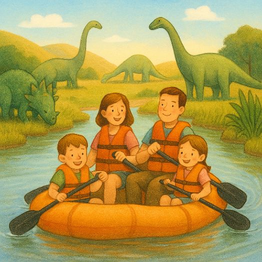
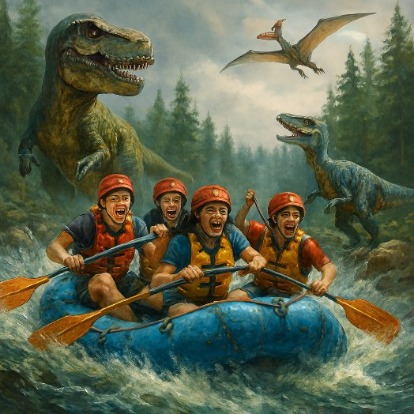
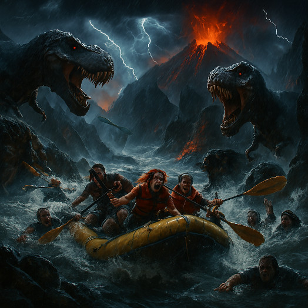

Family Float: gentle currents, heroic life jackets, and guides who double as snack-providers and bad-joke comedians. Perfect for toddlers, grandparents, and anyone whose idea of "adventure" is a slightly faster breeze and an extra cookie.

Rigorous Raft: grab your crew for a sprint through dinosaur territory—roaring cliffside views. Perfect for teens chasing big thrills, inside jokes, and the kind of mild chaos that becomes group chat legend. Mandatory life jackets, optional dinosaur sized bravado (no actual chomping guaranteed (probably)).

Extinction Express: white‑water rafting through dinosaur‑infested rapids — where survival is optional but the souvenir T‑shirt is guaranteed. Expect bone‑rattling drops, cliffside roars, mandatory liability waivers, one mildly panicked guide, and an on‑board photographer (if your camera survives). Book now; refunds are for the living.